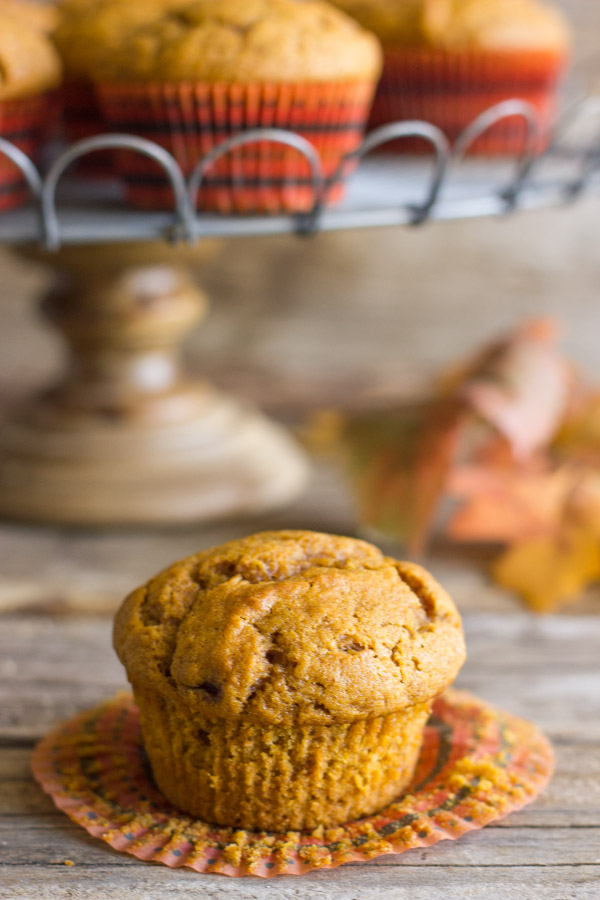

Ingredients
- 1 3/4 cups all purpose flour
- 1 cup sugar
- 1/2 cup dark brown sugar
- 1 teaspoon baking soda
- 1/2 teaspoon salt
- 2 teaspoons cinnamon
- 1/4 teaspoon ground clove
- 1/4 teaspoon nutmeg
- 2 eggs
- 1 15 ounce can pure pumpkin puree
- 1/2 cup coconut oil, melted
- 1 teaspoon vanilla extract
- 1 cup choclate chips
Directions
- Preheat the oven to 375 degrees and place 12 paper liners into each well of your standard size muffin baking pan.
- Measure out the flour, sugars, baking soda, salt and spices in a medium bowl and whisk together. Set aside.
- In another bowl, whisk together the eggs, pumpkin puree, coconut oil and vanilla extract.
- Pour the wet ingredients into the dry ingredients and stir together. Do not over mix, just stir until everything is incorporated into the batter.
- Add choclate chips
- It is helpful to use a large scoop (like an ice cream scoop) to evenly distribute the batter into each well. They will be nearly full. This will help give your muffins a nice puffy done.
- Bake your muffins for 20-22 minutes or until a toothpick inserted into the center of a muffin comes out clean.
Recipe From
Contact Me
allison.berrian@umontana.edu
The University of Montana
32 Campus Dr
Missoula, MT 59812